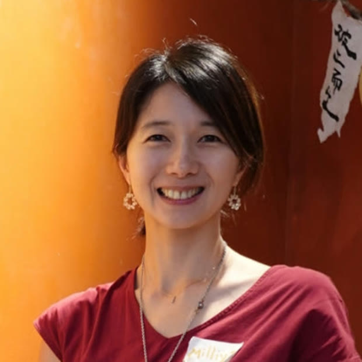
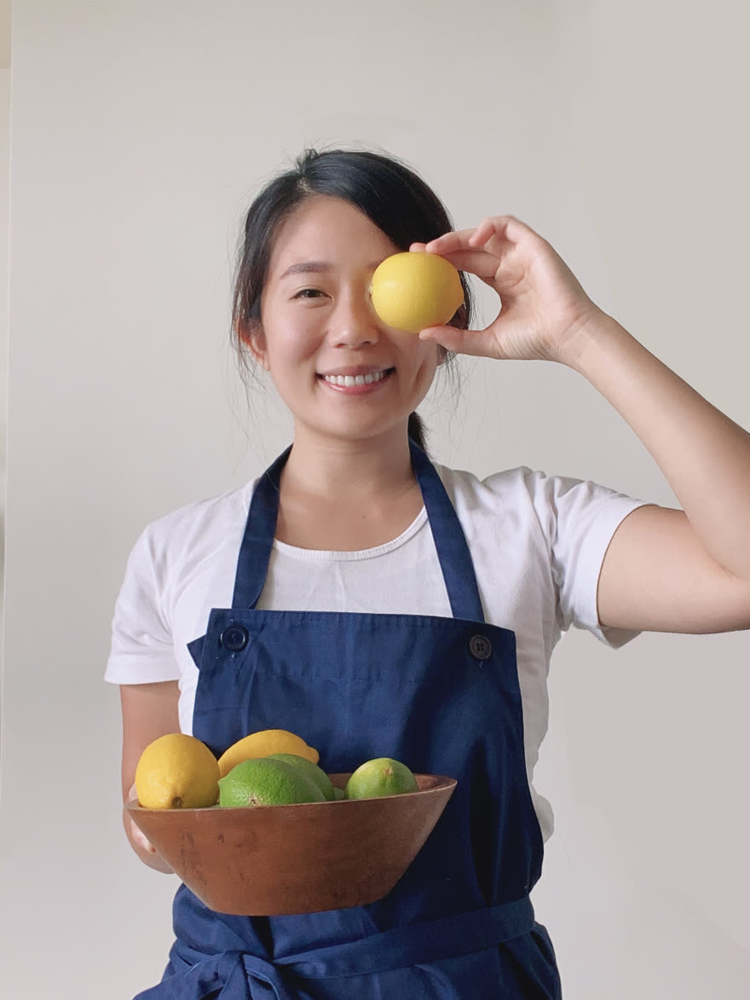

主講 ・ Tatiana Chen 自媒體講師・4.5 萬讀者
一堂專門為做陪伴、療癒、身心靈工作的女性開的自媒體課。
妳做的是很難用一句話講完的事 —— 這一晚，我請專業的人來講怎麼講清楚。
9 / 2（週三）20:00–21:30 線上・全程開放回放
這一晚同時是真愛 AI 陪跑課的必修前導課 —— 該課學員免費參加
第一梯上完之後，我發現卡住大家的常常不是 AI。
是坐在螢幕前，不知道自己要做什麼。
妳問它「幫我寫一篇貼文」，它就真的給妳一篇 —— 通順、漂亮、可以直接發，但不像妳。
不是它不夠聰明，是它不知道妳是誰。而很多時候，我們自己也還沒說清楚。
所以在四堂課開始的前一週，我想先開這一晚。
把「我是誰」跟「我要用 AI 做什麼」放在一起談 —— 這兩件事本來就是同一件。
定位跟營運不是我的專業，所以我沒有自己講。
我請了 Tatiana Chen —— 一個從全職媽媽做到四萬粉的自媒體講師。
我只做一件事：把她講的，接回下一週妳要動手做的東西上。
這一晚我把它排成 AI 課的必修，第一梯與第二梯的姊妹都可以免費參加。
必修，但不是負擔 —— 免費、全程回放，當下不能來也跟得上。
九十分鐘，主體是 Tati 的兩段。
我負責開場，也負責把她講的，接回下一週妳要動手做的東西。
我說明這一晚跟 9/9 開始那四堂的關係，以及我希望妳今晚帶著什麼問題聽。
Milliya身心靈與療癒工作者最常掉進的幾個定位誤區，Tati 會一個一個拆。然後談那件最難的事：怎麼把「我陪妳回到自己」這種話，變成別人聽得懂、也敢相信的具體 —— 信任跟風險之間，該怎麼拿捏。
Tatiana Chen ・ 主講不用每天重新想要發什麼 —— Tati 會給一套內容產出的系統。也談說故事、談把生活本身當成創作，談療癒工作者需要的是感動式的行銷，不是叫賣式的。最後回到一個問題：自媒體怎麼做，才會越做越快樂。
Tatiana Chen ・ 主講Tati 講完之後，我把它接回工具：怎麼讓 AI 知道妳是誰、妳的語氣、妳服務誰，它做出來的東西才會像妳。最後留時間給問題，也聊聊接下來可以怎麼走。
Milliya她談的是我教不了的那一半：我會陪妳把東西做出來，
她會陪妳想清楚，這個東西要為誰而做。
全職媽媽，兩個孩子，也是料理家。2023 年開始經營自己的品牌「小手料理 Small Hand Cook」，現在有 4.5 萬位讀者跟著她。
在那之前，她做的是別人的品牌 —— STAR HOSTEL 信星旅館的行銷與營運經理，帶著團隊拿下全球青年旅館第一名。所以她談的不只是怎麼被看見，還有怎麼撐得住。

陪產員、孕產顧問，也是「真愛 AI 陪跑課」的老師。第一梯七位姊妹，課程結束後每個人都帶走了自己的作品。
我不是科技人。我自己就是從完全不會，一路做出活動網頁、報名表單、線上預約系統 —— 所以我知道妳會卡在哪。
我找一個人來講定位，條件只有一個 ——
她自己得先站得住。

living soft, living strong
這是她寫在自己帳號上的一句話。溫柔地活，也強壯地活 —— 我看到的時候愣了一下，因為這幾乎就是我一直想跟姊妹們說的事。
三年，三百多篇。她不是一夕之間被看見的，是一篇一篇寫過來的 —— 這也是為什麼她說「數字沒那麼重要」的時候，我聽得進去。
備料、下鍋，然後坐下來好好吃一頓。
她的日常就是她的內容 —— 這也是 9/2 那晚她會講到的其中一件事：生活既是創作。
照片｜EVERYDAY OBJECT × Lagostina 專訪・攝影 花籽
照顧自己、把飯吃好一點、孩子的副食品、當季的菜，還有她在聽的歌。
這就是那一晚會講到的「內容支柱」—— 不是什麼玄的行銷名詞，就是把妳講得出來的事分成幾類，然後長長久久地講下去。妳點進她的帳號，一眼就知道她是誰。
Instagram、Threads、Facebook、部落格，還有一個專門講採買的「媽媽買什麼」。料理、育兒、生活、選物 —— 角色不少，平台也不少，可是不亂。
因為從頭到尾，都是同一個人在講話。
妳手上如果也有好幾件事想被看見，這一段會是妳的。
不需要已經有帳號，也不需要已經想清楚。
下面這三個網站，是上完 9/9 那四堂的姊妹自己做的。
她們來的時候，沒有一個人寫過程式 —— 有幾個現在已經在線上收預約了。


這一晚談的是「我是誰」。
真愛 AI 陪跑課談的是「怎麼把它變成看得見的東西」 ——
看看那四堂在做什麼 →
只想聽這一晚可以，想連下一段一起走也可以。
怎麼進來都歡迎。